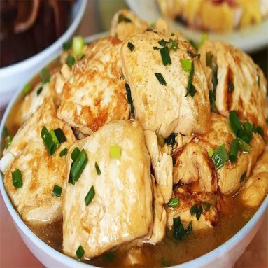

岑溪有一道鲜美可口的特色菜－－煎豆腐，本地又称“豆腐酿”。这特色菜从何时开始，已无从可考，起码有百多年的历史了。如今，还是家家户户逢年过节，招待客人不可少的“传统保留节目”呢！外地的朋友每到这里，也一定会点这一道特色美味。 |
| ⊙绝世美味 | ||
|
肉馅也可根据各人的爱好添加韭菜、胡萝卜或蘑菇等等，可能还会加上陈皮末或者是花生粉。然后把豆腐横切成许多半厘米左右的薄片，两片豆腐中间夹着馅，然后就可以把豆腐酿放进锅里了。有用锅炖豆腐酿的，有用锅煎豆腐酿的。不过一般都是用煎这种做法。等豆腐酿熟透后，可在其上面放些葱花、香菜。
烹饪技巧
煎豆腐，油少容易粘锅，为了不粘锅，要放足量的油，而且火候要得当，时间要比较长，一般大概要20－30分钟左右，正所谓“心急吃不了煎豆腐”，火候太猛，容易煎糊，甚至连馅都煮不熟透。煎了一面，又要反过一面煎，直到两面豆腐皮香黄。煎熟后，再在外面淋上酱油、南乳、淀粉或鸡精、胡椒粉等配制成的调料，依各人口味不同，可适当增减配料，例如可放些辣椒粉，和味后再焖几分钟，俗称“打卤”，然后便成了一道鲜嫩可口、色香美味的佳肴了。 |
||
|  | ||